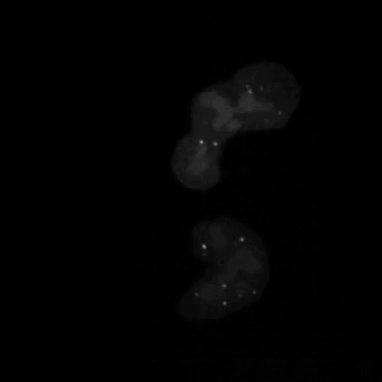

What is Gene Therapy?
Some genetic diseases can be cured by replacing a mutated gene with a corrected piece of DNA. In a laboratory setting, natural viruses can be re-engineered into vectors that deliver these corrected genes. Adeno-associated viral (AAV) vectors are the most popular method of in-vivo gene delivery, but success is currently limited to a few diseases.
By understanding the biological principles of vector assembly and gene delivery, we hope to enable the safe use of AAV vectors for a broad set of disease applications — keeping these therapies accessible to all patients.


Watching Biology in Real Time
Using model cell lines and reporter vectors, we can visualize individual vector DNA molecules in living cells and observe their behavior under many different conditions.
Here, individual DNAs can be seen as white dots — tiny at first — diffusing throughout nuclei. Once two foci meet, they fuse irreversibly into a larger focus, signifying their concatenation. As more vector genomes concatenate, these episomes can become incredibly large!
We seek to understand these and other cellular processes to improve DNA delivery in therapeutic settings.
Read About These Systems →Tuning Host Factors
Our work centers on understanding how host cell biology governs every stage of the rAAV life cycle — from capsid assembly through payload delivery and long-term gene persistence. By identifying and tuning the key host factors at each step, we aim to make gene therapy safer, more effective, and accessible.

Three Areas of Focus
Capsid Assembly
In rAAV gene therapy, a correct form of a disease-causing gene is packaged into an icosahedral protein shell called the capsid. We use light and electron microscopy under genetic and pharmacological perturbations to understand the vector-host interactions critical for capsid assembly. These are the keys to producing enough rAAV vector to meet patient need and keep costs accessible to all patients.
Gene Silencing
Although rAAV-delivered DNA has the ability to correct disease, it is a foreign entity to the cell. We use microscopy and proteomic approaches to understand how the host cell processes and regulates virally delivered genes. Understanding these vector-host interactions are the key to ensuring therapeutic transgenes are not silenced or eliminated over time.
DNA Concatenation
The capsid can only hold a limited amount of DNA, which limits what genes we can deliver with rAAV vectors. Once delivered to the nucleus, multiple vector DNA ends are joined together by host cell machinery. As part of the FNIH Bespoke Gene Therapy Consortium, we use genetic and pharmacological screens to identify the host factors of concatenation — enabling much larger genes to be reconstituted in target tissues.